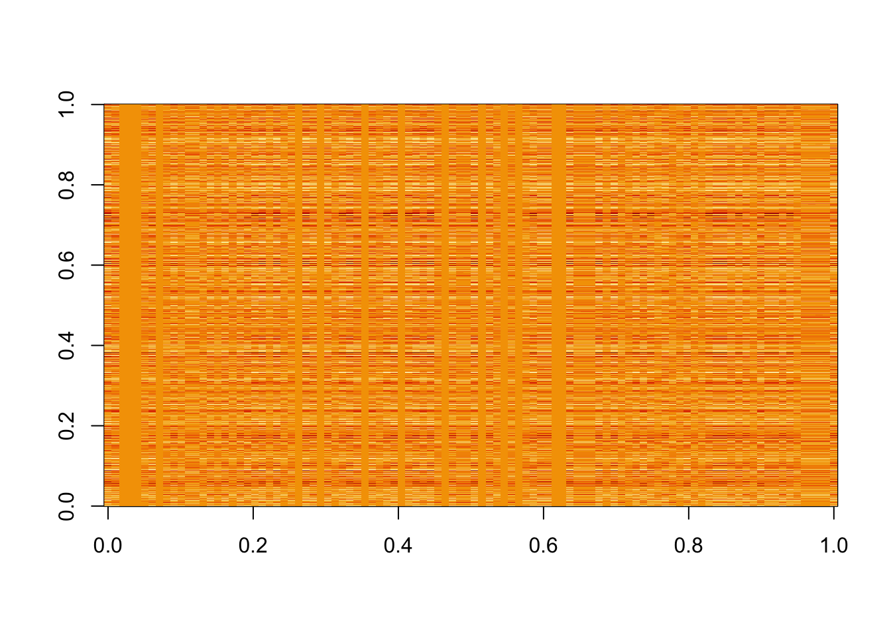
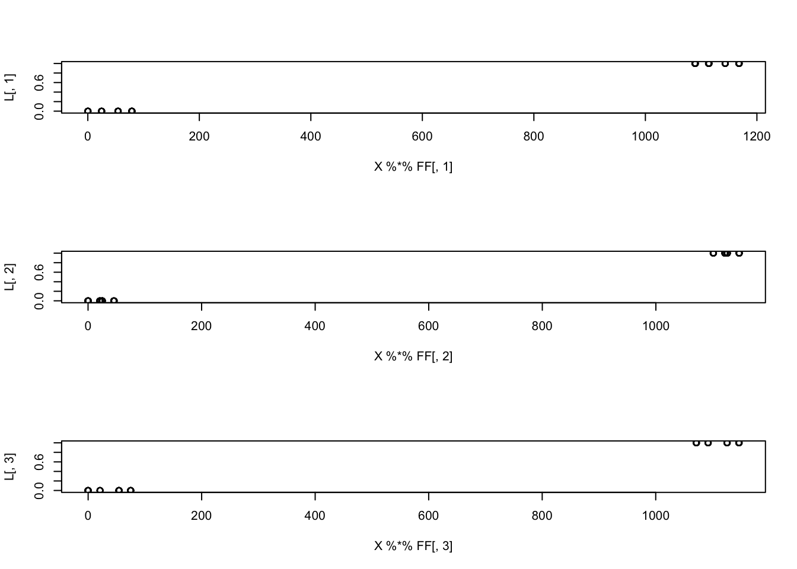
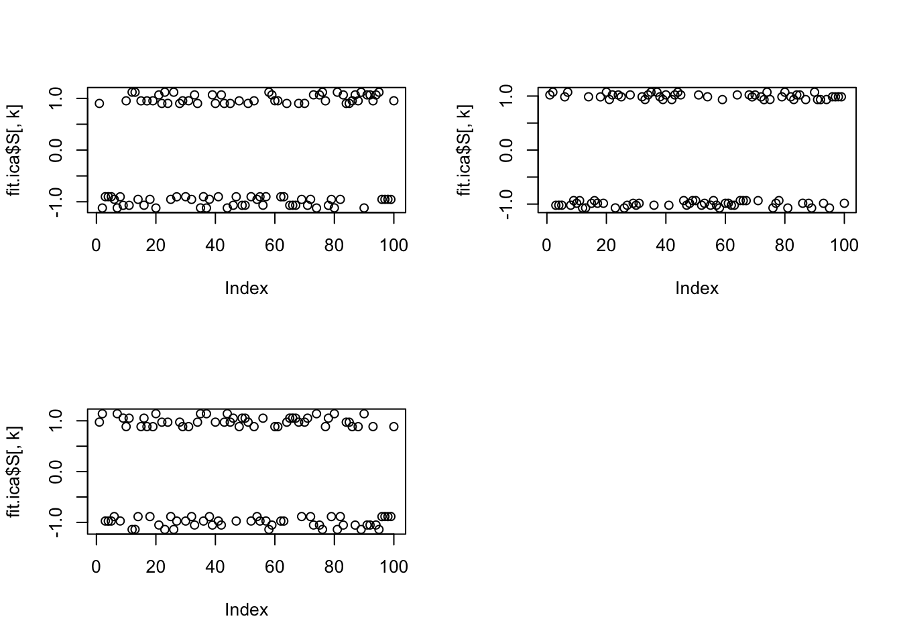
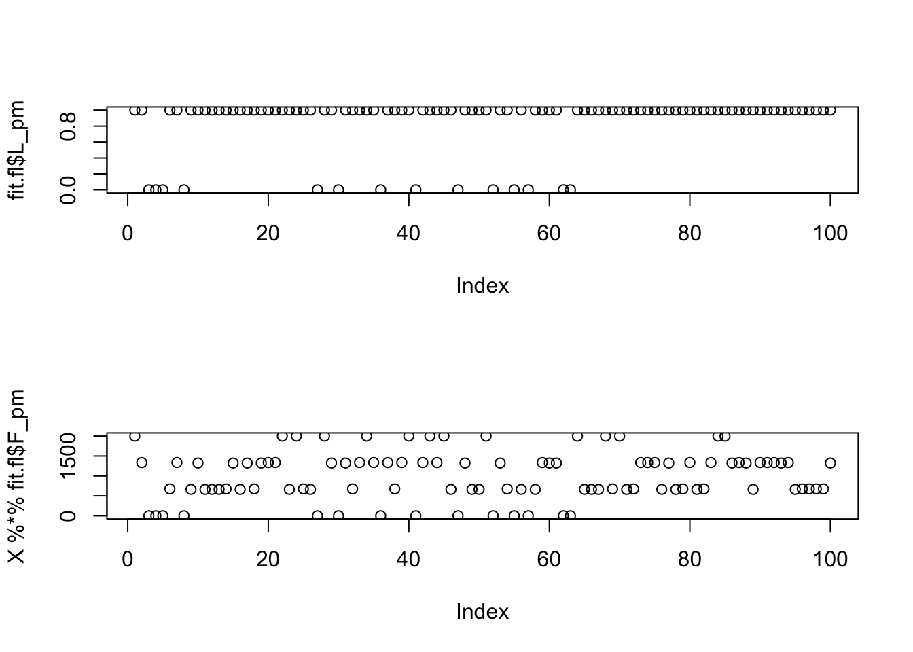
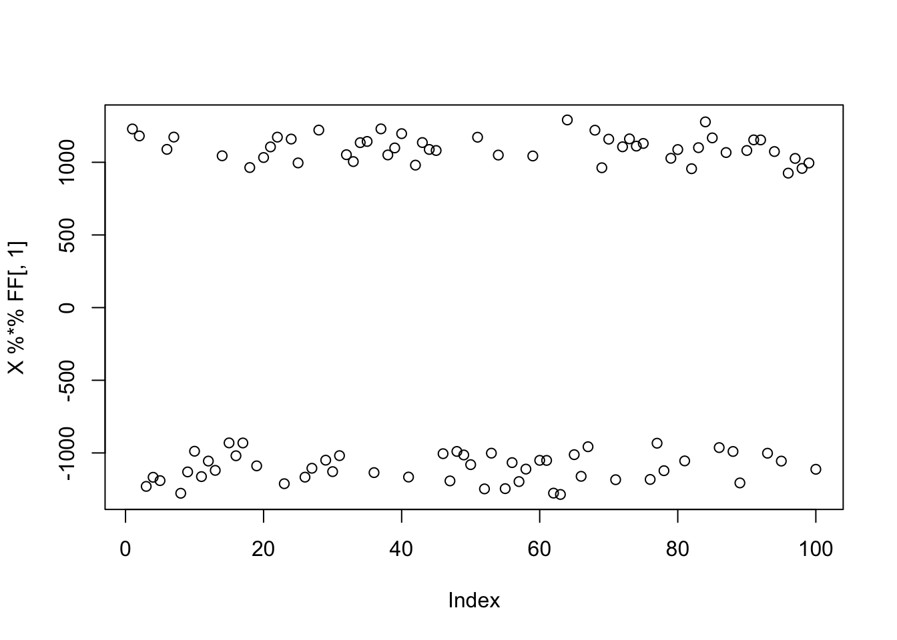
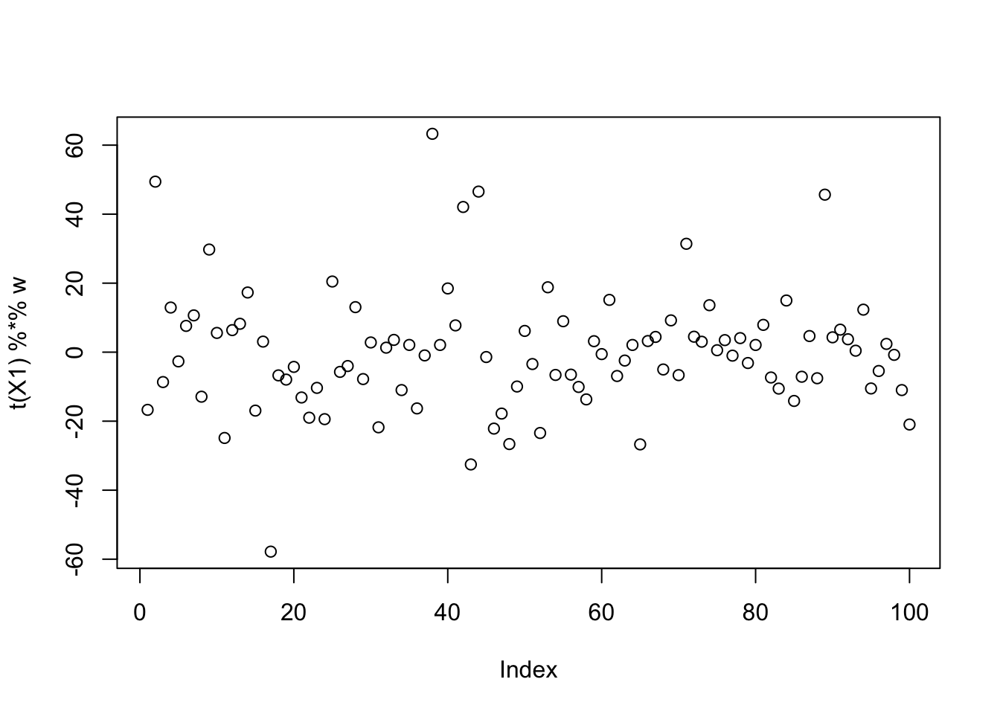
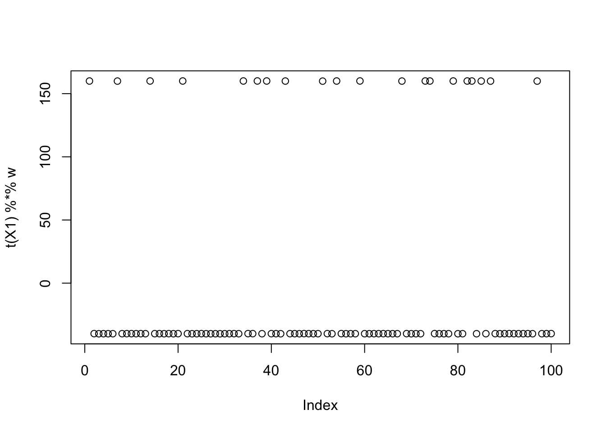
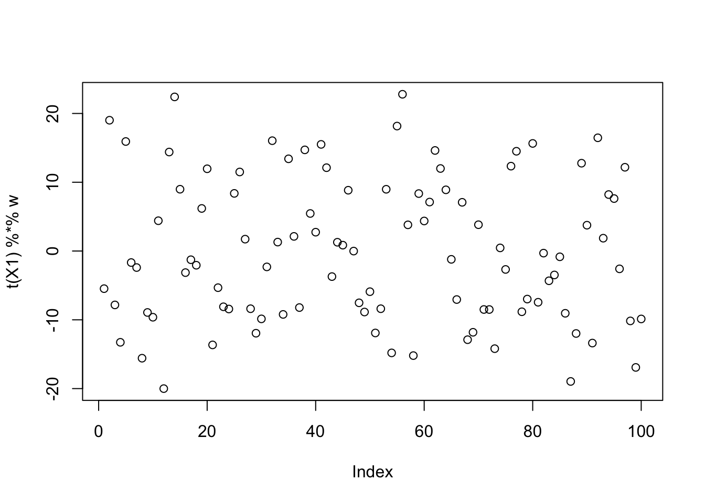

fastica_02
Matthew Stephens
2025-10-27
Last updated: 2025-11-14
Checks: 7 0
Knit directory: misc/analysis/
This reproducible R Markdown analysis was created with workflowr (version 1.7.1). The Checks tab describes the reproducibility checks that were applied when the results were created. The Past versions tab lists the development history.
Great! Since the R Markdown file has been committed to the Git repository, you know the exact version of the code that produced these results.
Great job! The global environment was empty. Objects defined in the global environment can affect the analysis in your R Markdown file in unknown ways. For reproduciblity it’s best to always run the code in an empty environment.
The command set.seed(1) was run prior to running the
code in the R Markdown file. Setting a seed ensures that any results
that rely on randomness, e.g. subsampling or permutations, are
reproducible.
Great job! Recording the operating system, R version, and package versions is critical for reproducibility.
Nice! There were no cached chunks for this analysis, so you can be confident that you successfully produced the results during this run.
Great job! Using relative paths to the files within your workflowr project makes it easier to run your code on other machines.
Great! You are using Git for version control. Tracking code development and connecting the code version to the results is critical for reproducibility.
The results in this page were generated with repository version a415272. See the Past versions tab to see a history of the changes made to the R Markdown and HTML files.
Note that you need to be careful to ensure that all relevant files for
the analysis have been committed to Git prior to generating the results
(you can use wflow_publish or
wflow_git_commit). workflowr only checks the R Markdown
file, but you know if there are other scripts or data files that it
depends on. Below is the status of the Git repository when the results
were generated:
Ignored files:
Ignored: .DS_Store
Ignored: .Rhistory
Ignored: .Rproj.user/
Ignored: analysis/.RData
Ignored: analysis/.Rhistory
Ignored: analysis/ALStruct_cache/
Ignored: data/.Rhistory
Ignored: data/methylation-data-for-matthew.rds
Ignored: data/pbmc/
Ignored: data/pbmc_purified.RData
Untracked files:
Untracked: .dropbox
Untracked: Icon
Untracked: analysis/GHstan.Rmd
Untracked: analysis/GTEX-cogaps.Rmd
Untracked: analysis/PACS.Rmd
Untracked: analysis/Rplot.png
Untracked: analysis/SPCAvRP.rmd
Untracked: analysis/abf_comparisons.Rmd
Untracked: analysis/admm_02.Rmd
Untracked: analysis/admm_03.Rmd
Untracked: analysis/bispca.Rmd
Untracked: analysis/cache/
Untracked: analysis/cholesky.Rmd
Untracked: analysis/compare-transformed-models.Rmd
Untracked: analysis/cormotif.Rmd
Untracked: analysis/cp_ash.Rmd
Untracked: analysis/eQTL.perm.rand.pdf
Untracked: analysis/eb_power2.Rmd
Untracked: analysis/eb_prepilot.Rmd
Untracked: analysis/eb_var.Rmd
Untracked: analysis/ebpmf1.Rmd
Untracked: analysis/ebpmf_sla_text.Rmd
Untracked: analysis/ebspca_sims.Rmd
Untracked: analysis/explore_psvd.Rmd
Untracked: analysis/fa_check_identify.Rmd
Untracked: analysis/fa_iterative.Rmd
Untracked: analysis/fastica_centered.Rmd
Untracked: analysis/flash_cov_overlapping_groups_init.Rmd
Untracked: analysis/flash_test_tree.Rmd
Untracked: analysis/flashier_newgroups.Rmd
Untracked: analysis/flashier_nmf_triples.Rmd
Untracked: analysis/flashier_pbmc.Rmd
Untracked: analysis/flashier_snn_shifted_prior.Rmd
Untracked: analysis/greedy_ebpmf_exploration_00.Rmd
Untracked: analysis/ieQTL.perm.rand.pdf
Untracked: analysis/lasso_em_03.Rmd
Untracked: analysis/m6amash.Rmd
Untracked: analysis/mash_bhat_z.Rmd
Untracked: analysis/mash_ieqtl_permutations.Rmd
Untracked: analysis/methylation_example.Rmd
Untracked: analysis/mixsqp.Rmd
Untracked: analysis/mr.ash_lasso_init.Rmd
Untracked: analysis/mr.mash.test.Rmd
Untracked: analysis/mr_ash_modular.Rmd
Untracked: analysis/mr_ash_parameterization.Rmd
Untracked: analysis/mr_ash_ridge.Rmd
Untracked: analysis/mv_gaussian_message_passing.Rmd
Untracked: analysis/nejm.Rmd
Untracked: analysis/nmf_bg.Rmd
Untracked: analysis/nonneg_underapprox.Rmd
Untracked: analysis/normal_conditional_on_r2.Rmd
Untracked: analysis/normalize.Rmd
Untracked: analysis/pbmc.Rmd
Untracked: analysis/pca_binary_weighted.Rmd
Untracked: analysis/pca_l1.Rmd
Untracked: analysis/poisson_nmf_approx.Rmd
Untracked: analysis/poisson_shrink.Rmd
Untracked: analysis/poisson_transform.Rmd
Untracked: analysis/qrnotes.txt
Untracked: analysis/ridge_iterative_02.Rmd
Untracked: analysis/ridge_iterative_splitting.Rmd
Untracked: analysis/samps/
Untracked: analysis/sc_bimodal.Rmd
Untracked: analysis/shrinkage_comparisons_changepoints.Rmd
Untracked: analysis/susie_cov.Rmd
Untracked: analysis/susie_en.Rmd
Untracked: analysis/susie_z_investigate.Rmd
Untracked: analysis/svd-timing.Rmd
Untracked: analysis/temp.RDS
Untracked: analysis/temp.Rmd
Untracked: analysis/test-figure/
Untracked: analysis/test.Rmd
Untracked: analysis/test.Rpres
Untracked: analysis/test.md
Untracked: analysis/test_qr.R
Untracked: analysis/test_sparse.Rmd
Untracked: analysis/tree_dist_top_eigenvector.Rmd
Untracked: analysis/z.txt
Untracked: code/coordinate_descent_symNMF.R
Untracked: code/multivariate_testfuncs.R
Untracked: code/rqb.hacked.R
Untracked: data/4matthew/
Untracked: data/4matthew2/
Untracked: data/E-MTAB-2805.processed.1/
Untracked: data/ENSG00000156738.Sim_Y2.RDS
Untracked: data/GDS5363_full.soft.gz
Untracked: data/GSE41265_allGenesTPM.txt
Untracked: data/Muscle_Skeletal.ACTN3.pm1Mb.RDS
Untracked: data/P.rds
Untracked: data/Thyroid.FMO2.pm1Mb.RDS
Untracked: data/bmass.HaemgenRBC2016.MAF01.Vs2.MergedDataSources.200kRanSubset.ChrBPMAFMarkerZScores.vs1.txt.gz
Untracked: data/bmass.HaemgenRBC2016.Vs2.NewSNPs.ZScores.hclust.vs1.txt
Untracked: data/bmass.HaemgenRBC2016.Vs2.PreviousSNPs.ZScores.hclust.vs1.txt
Untracked: data/eb_prepilot/
Untracked: data/finemap_data/fmo2.sim/b.txt
Untracked: data/finemap_data/fmo2.sim/dap_out.txt
Untracked: data/finemap_data/fmo2.sim/dap_out2.txt
Untracked: data/finemap_data/fmo2.sim/dap_out2_snp.txt
Untracked: data/finemap_data/fmo2.sim/dap_out_snp.txt
Untracked: data/finemap_data/fmo2.sim/data
Untracked: data/finemap_data/fmo2.sim/fmo2.sim.config
Untracked: data/finemap_data/fmo2.sim/fmo2.sim.k
Untracked: data/finemap_data/fmo2.sim/fmo2.sim.k4.config
Untracked: data/finemap_data/fmo2.sim/fmo2.sim.k4.snp
Untracked: data/finemap_data/fmo2.sim/fmo2.sim.ld
Untracked: data/finemap_data/fmo2.sim/fmo2.sim.snp
Untracked: data/finemap_data/fmo2.sim/fmo2.sim.z
Untracked: data/finemap_data/fmo2.sim/pos.txt
Untracked: data/logm.csv
Untracked: data/m.cd.RDS
Untracked: data/m.cdu.old.RDS
Untracked: data/m.new.cd.RDS
Untracked: data/m.old.cd.RDS
Untracked: data/mainbib.bib.old
Untracked: data/mat.csv
Untracked: data/mat.txt
Untracked: data/mat_new.csv
Untracked: data/matrix_lik.rds
Untracked: data/paintor_data/
Untracked: data/running_data_chris.csv
Untracked: data/running_data_matthew.csv
Untracked: data/temp.txt
Untracked: data/y.txt
Untracked: data/y_f.txt
Untracked: data/zscore_jointLCLs_m6AQTLs_susie_eQTLpruned.rds
Untracked: data/zscore_jointLCLs_random.rds
Untracked: explore_udi.R
Untracked: output/fit.k10.rds
Untracked: output/fit.nn.pbmc.purified.rds
Untracked: output/fit.nn.rds
Untracked: output/fit.nn.s.001.rds
Untracked: output/fit.nn.s.01.rds
Untracked: output/fit.nn.s.1.rds
Untracked: output/fit.nn.s.10.rds
Untracked: output/fit.snn.s.001.rds
Untracked: output/fit.snn.s.01.nninit.rds
Untracked: output/fit.snn.s.01.rds
Untracked: output/fit.varbvs.RDS
Untracked: output/fit2.nn.pbmc.purified.rds
Untracked: output/glmnet.fit.RDS
Untracked: output/snn07.txt
Untracked: output/snn34.txt
Untracked: output/test.bv.txt
Untracked: output/test.gamma.txt
Untracked: output/test.hyp.txt
Untracked: output/test.log.txt
Untracked: output/test.param.txt
Untracked: output/test2.bv.txt
Untracked: output/test2.gamma.txt
Untracked: output/test2.hyp.txt
Untracked: output/test2.log.txt
Untracked: output/test2.param.txt
Untracked: output/test3.bv.txt
Untracked: output/test3.gamma.txt
Untracked: output/test3.hyp.txt
Untracked: output/test3.log.txt
Untracked: output/test3.param.txt
Untracked: output/test4.bv.txt
Untracked: output/test4.gamma.txt
Untracked: output/test4.hyp.txt
Untracked: output/test4.log.txt
Untracked: output/test4.param.txt
Untracked: output/test5.bv.txt
Untracked: output/test5.gamma.txt
Untracked: output/test5.hyp.txt
Untracked: output/test5.log.txt
Untracked: output/test5.param.txt
Unstaged changes:
Modified: .gitignore
Modified: analysis/eb_snmu.Rmd
Modified: analysis/ebnm_binormal.Rmd
Modified: analysis/ebpower.Rmd
Modified: analysis/flashier_log1p.Rmd
Modified: analysis/flashier_sla_text.Rmd
Modified: analysis/logistic_z_scores.Rmd
Modified: analysis/mr_ash_pen.Rmd
Modified: analysis/nmu_em.Rmd
Modified: analysis/susie_flash.Rmd
Modified: analysis/tap_free_energy.Rmd
Modified: misc.Rproj
Note that any generated files, e.g. HTML, png, CSS, etc., are not included in this status report because it is ok for generated content to have uncommitted changes.
These are the previous versions of the repository in which changes were
made to the R Markdown (analysis/fastica_02.Rmd) and HTML
(docs/fastica_02.html) files. If you’ve configured a remote
Git repository (see ?wflow_git_remote), click on the
hyperlinks in the table below to view the files as they were in that
past version.
| File | Version | Author | Date | Message |
|---|---|---|---|---|
| Rmd | a415272 | Matthew Stephens | 2025-11-14 | workflowr::wflow_publish("fastica_02.Rmd") |
| html | fd23328 | Matthew Stephens | 2025-11-11 | Build site. |
| Rmd | a0618ff | Matthew Stephens | 2025-11-11 | workflowr::wflow_publish("fastica_02.Rmd") |
| html | da28447 | Matthew Stephens | 2025-11-03 | Build site. |
| Rmd | 59ffdb1 | Matthew Stephens | 2025-11-03 | workflowr::wflow_publish("fastica_02.Rmd") |
library(flashier)Loading required package: ebnmlibrary(fastICA)Introduction
I wanted to implement single unit fast ica for myself to better understand what it is doing. I also compare the single unit solution with the single unit solution from flashier in a simulation.
Single unit ICA
This is the basic update for fastICA:
fastica_r1update = function(X,w){
w= w/sqrt(sum(w^2))
P = t(X) %*% w
G = tanh(P)
G2 = 1-tanh(P)^2
w = X %*% G - sum(G2) * w
return(w)
}The following function centers and whitens the data. This code is based on the fastICA function in the fastICA package. It projects the columns of X onto the top n.comp PCs. These projections are the rows of the returned matrix, so the returned matrix has n.comp rows and nrow(X) columns. It seems it could be better to avoid forming XX’ in some cases but for now I just followed the fastICA code.
(Actually it seems this should be equivalent to finding the first n.comp right eigenvectors of the centered X? ie we could replace the projection step with X’ = UDV’ and take (root-n times) the first k rows of V’?)
preprocess = function(X, n.comp=10){
n <- nrow(X)
p <- ncol(X)
X <- scale(X, scale = FALSE)
X <- t(X)
## This appears to be equivalant to X1 = t(svd(X)$v[,1:n.comp])
V <- X %*% t(X)/n
s <- La.svd(V)
D <- diag(c(1/sqrt(s$d)))
K <- D %*% t(s$u)
K <- matrix(K[1:n.comp, ], n.comp, p)
X1 <- K %*% X
return(X1)
}Simulate data
These are the same simulations as in [fastica_01.html]
M <- 10000 # Number of variants/samples (rows)
L <- 10 # True number of latent factors
T <- 100 # Number of traits/phenotypes (columns)
s_1 <- 1 # Standard Deviation 1 (Spike component)
s_2 <- 5 # Standard Deviation 2 (Slab component)
eps <- 1e-2 # Standard Deviation for observation noise
# Set seed for reproducibility
set.seed(42)
# Data Simulation (G = X %*% Y + noise)
# 3.1. Generating Standard Deviation Matrices (a and b)
# Elements are sampled from {s_1, s_2} [1, 2].
sd_choices <- c(s_1, s_2)
# Matrix 'a' (M x L): Standard deviations for X (Probabilities p=[0.7, 0.3]) [4]
p_a <- c(0.7, 0.3)
a_vector <- sample(sd_choices, size = M * L, replace = TRUE, prob = p_a)
a <- matrix(a_vector, nrow = M, ncol = L)
# Matrix 'b' (L x T): Standard deviations for Y (Probabilities p=[0.8, 0.2]) [4]
p_b <- c(0.8, 0.2)
b_vector <- sample(sd_choices, size = L * T, replace = TRUE, prob = p_b)
b <- matrix(b_vector, nrow = L, ncol = T)
# Generating Latent Factors (X and Y)
# X is drawn from Normal(0, a)
X <- matrix(rnorm(M * L, mean = 0, sd = a), nrow = M, ncol = L)
# Y is drawn from Normal(0, b)
Y <- matrix(rnorm(L * T, mean = 0, sd = b), nrow = L, ncol = T)
# Generating Noise and Final Data Matrix G
# Noise is generated from Normal(0, eps)
noise <- matrix(rnorm(M * T, mean = 0, sd = eps), nrow = M, ncol = T)
# Calculate the final data matrix G = X @ Y + noise
G <- X %*% Y + noiseRun single unit ICA
Here w is a linear combination of the rows of X1, and the goal is to find a linear combination that makes the result highly non-gaussian.
X1 = preprocess(G)
w = rnorm(nrow(X1))
for(i in 1:100)
w = fastica_r1update(X1,w)
cor(X,t(X1) %*% w) [,1]
[1,] 0.007917032
[2,] 0.016874935
[3,] -0.003013217
[4,] -0.014116212
[5,] -0.022826403
[6,] 0.012073761
[7,] -0.013725345
[8,] -0.999735758
[9,] 0.019391558
[10,] -0.009698386w = w/sqrt(sum(w^2))
s = t(X1) %*% w
a = t(G) %*% s/sum(s^2)Compare with flashier
Here I run flashier (rank 1) using point-laplace. It finds a solution that is correlated with several of the true “sources” rather than picking out a single source.
fit.fl = flash(G, ebnm_fn = ebnm_point_laplace, greedy_Kmax = 1)Adding factor 1 to flash object...
Wrapping up...
Done.
Nullchecking 1 factors...
Done.cor(X, fit.fl$L_pm) [,1]
[1,] -0.38096684
[2,] 0.18415007
[3,] -0.08594179
[4,] 0.13024137
[5,] -0.17705347
[6,] 0.56027817
[7,] -0.11790432
[8,] -0.61768280
[9,] 0.25136866
[10,] 0.05943069Here I try initializing from the fastica solution. It moves away from that solution to something similar to the solution above.
fit.fl2 = flash_init(G) |> flash_factors_init(init = list(s,a), ebnm_fn = ebnm_point_laplace) |> flash_backfit()Backfitting 1 factors (tolerance: 1.49e-02)...
Difference between iterations is within 1.0e+03...
Difference between iterations is within 1.0e+02...
Difference between iterations is within 1.0e+01...
Difference between iterations is within 1.0e+00...
Difference between iterations is within 1.0e-01...
Difference between iterations is within 1.0e-02...
Wrapping up...
Done.cor(X, fit.fl2$L_pm) [,1]
[1,] -0.38107694
[2,] 0.18447165
[3,] -0.08604185
[4,] 0.12970939
[5,] -0.17691546
[6,] 0.56051773
[7,] -0.11795167
[8,] -0.61765857
[9,] 0.25082905
[10,] 0.05933034fit.fl$elbo[1] -4404522fit.fl2$elbo[1] -4404524Understanding the result
Here I look at the “fit” term. We see that the flash solution gives a better mean squared error than the ICA solution. In fact the ICA solution is not really very driven by mean squared error: it looks for directions that are non-gaussian without worrying at all about the mse (except they have to be linear combinations of the rows of X).
mean((G-fitted(fit.fl))^2)[1] 376.2759mean((G-fitted(fit.fl2))^2)[1] 376.2755mean((G-s%*%t(a))^2)[1] 396.8568This gets me thinking that, in terms of finding the true sources, maybe flash (rank 1) is over emphasising the fit term relative to the penalty (non-gaussian) term. Maybe we could improve this by downweighting the fit term somehow. Here I look at the nuclear norm of the residuals for the two approaches:
nuclear_norm = function(X){
s = svd(X)$d
return(sum(s))
}
frob_norm = function(X){
s = svd(X)$d
return(sqrt(sum(s^2)))
}
(nuclear_norm((G-fitted(fit.fl))) - nuclear_norm((G-s%*%t(a))))/(ncol(G)*nrow(G))[1] -0.0009582495(frob_norm((G-fitted(fit.fl))) - frob_norm((G-s%*%t(a))))/(ncol(G)*nrow(G))[1] -0.000523434Independent binary groups (3 groups of +-1)
Here I try simulating 3 binary groups (each an independent 50-50 split in n=100). I use +-1 for the groups here (so it is not a nonnegative simulation here). Specifically I simulate \(X=LF'+E\) where \(L\) are +-1 and \(F\) are iid normal. I add a small error term.
K=3
p = 1000
n = 100
set.seed(1)
L = matrix(-1,nrow=n,ncol=K)
for(i in 1:K){L[sample(1:n,n/2),i]=1}
FF = matrix(rnorm(p*K), nrow = p, ncol=K)
X = L %*% t(FF) + rnorm(n*p,0,0.01)
image(X)
Since \(F\) is simulated here to be independent, it should be that \(F'F \approx I\), so \(XF\) shoudl be something close to \(L\), and indeed it is. I’m hoping ICA will find \(W=F\).
par(mfcol=c(3,1))
plot(X %*% FF[,1], L[,1])
plot(X %*% FF[,2], L[,2])
plot(X %*% FF[,3], L[,3])
fastICA
Single unit fastICA on these data picks out a single source:
X1 = preprocess(X)
w = rnorm(nrow(X1))
for(i in 1:10)
w = fastica_r1update(X1,w)
cor(L,t(X1) %*% w) [,1]
[1,] 0.09199908
[2,] -0.14565607
[3,] -0.99941252Here is multi-unit fastICA; it finds all 3 groups essentially perfectly.
fit.ica = fastICA(X, n.comp = 3)
apply(abs(cor(L,fit.ica$S)),1, max)[1] 0.9989443 0.9965059 0.9958627par(mfcol=c(2,2))
for(k in 1:3)
plot(fit.ica$S[,k])
flashier
Running single-unit flashier with point Laplace prior does not find any group - it finds the first PC.
fit.fl = flash(X, ebnm_fn = c(ebnm_point_laplace,ebnm_normal), greedy_Kmax = 1)Adding factor 1 to flash object...
Wrapping up...
Done.
Nullchecking 1 factors...
Done.cor(L,fit.fl$L_pm) [,1]
[1,] -0.1567018
[2,] -0.8002616
[3,] -0.6939910cor(svd(X)$u[,1],fit.fl$L_pm) [,1]
[1,] 0.9999963Similarly, running with backfitting finds the first 3 PCs.
fit.fl = flash(X, ebnm_fn = c(ebnm_point_laplace,ebnm_normal), greedy_Kmax = 10,backfit=TRUE)Adding factor 1 to flash object...
Adding factor 2 to flash object...
Adding factor 3 to flash object...
Adding factor 4 to flash object...
Factor doesn't significantly increase objective and won't be added.
Wrapping up...
Done.
Backfitting 3 factors (tolerance: 1.49e-03)...
Difference between iterations is within 1.0e+05...
Difference between iterations is within 1.0e+04...
Difference between iterations is within 1.0e+03...
Difference between iterations is within 1.0e+02...
Difference between iterations is within 1.0e+01...
Wrapping up...
Done.
Nullchecking 3 factors...
Done.cor(L,fit.fl$L_pm) [,1] [,2] [,3]
[1,] -0.1566870 -0.94939845 -0.2720530
[2,] -0.8002638 -0.08025245 0.5942468
[3,] -0.6939936 0.37506211 -0.6146585cor(svd(X)$u[,1:3],fit.fl$L_pm) [,1] [,2] [,3]
[1,] 0.9999966324 0.0024234410 0.0003082603
[2,] -0.0025763629 0.9999967966 0.0006660919
[3,] 0.0003124162 0.0007305277 -0.9999997306Here I try with a (approximate) Bernoulli (+-1) prior. First I define the ebnm_symmetric_bernoulli function to compute the posterior for this prior:
ebnm_symmetric_bernoulli = flash_ebnm(
prior_family = "normal_scale_mixture",
fix_g = TRUE,
g_init = ashr::normalmix(pi = c(0.5, 0.5),
mean = c(-1, 1),
sd = 1e-8))Single unit flash with this prior does not find a good solution.
fit.fl = flash(X, ebnm_fn = c(ebnm_symmetric_bernoulli,ebnm_normal), greedy_Kmax = 1)Adding factor 1 to flash object...
Wrapping up...
Done.
Nullchecking 1 factors...
Done.cor(L,fit.fl$L_pm) [,1]
[1,] -0.40
[2,] -0.64
[3,] -0.52cor(svd(X)$u[,1],fit.fl$L_pm) [,1]
[1,] 0.8279994par(mfcol=c(2,1))
plot(fit.fl$L_pm)
plot(X %*% fit.fl$F_pm)
But with backfitting it does find the correct solution:
fit.fl = flash(X, ebnm_fn = c(ebnm_symmetric_bernoulli,ebnm_normal) , greedy_Kmax = 10,backfit=TRUE)Adding factor 1 to flash object...
Adding factor 2 to flash object...
Adding factor 3 to flash object...
Adding factor 4 to flash object...
Adding factor 5 to flash object...
Adding factor 6 to flash object...
Adding factor 7 to flash object...
Adding factor 8 to flash object...
Adding factor 9 to flash object...
Factor doesn't significantly increase objective and won't be added.
Wrapping up...
Done.
Backfitting 8 factors (tolerance: 1.49e-03)...
Difference between iterations is within 1.0e+05...
Difference between iterations is within 1.0e+04...
Difference between iterations is within 1.0e+03...
--Estimate of factor 8 is numerically zero!
Difference between iterations is within 1.0e+02...
Difference between iterations is within 1.0e+01...
Difference between iterations is within 1.0e+00...
--Estimate of factor 7 is numerically zero!
--Estimate of factor 6 is numerically zero!
Difference between iterations is within 1.0e-01...
--Estimate of factor 5 is numerically zero!
--Estimate of factor 1 is numerically zero!
Difference between iterations is within 1.0e-02...
Difference between iterations is within 1.0e-03...
Wrapping up...
Done.
Nullchecking 8 factors...
5 factors are identically zero.
Wrapping up...
Removed 5 factors.
Done.cor(L,fit.fl$L_pm) [,1] [,2] [,3]
[1,] -1.00 -0.08 0.04
[2,] -0.04 0.16 1.00
[3,] 0.08 1.00 0.16Independent binary groups (3 groups of 0,1)
Now I redo those simulations, but with 0-1 groups instead of +-1.
K=3
p = 1000
n = 100
set.seed(1)
L = matrix(0,nrow=n,ncol=K)
for(i in 1:K){L[sample(1:n,n/2),i]=1}
FF = matrix(rnorm(p*K), nrow = p, ncol=K)
X = L %*% t(FF) + rnorm(n*p,0,0.01)
image(X)
Since \(F\) is simulated here to be independent, it should be that \(F'F \approx I\), so \(XF\) shoudl be something close to \(L\), and indeed it is. I’m hoping ICA will find \(W=F\).
par(mfcol=c(3,1))
plot(X %*% FF[,1], L[,1])
plot(X %*% FF[,2], L[,2])
plot(X %*% FF[,3], L[,3])
fastICA
Single unit fastICA on these data picks out a single source:
X1 = preprocess(X)
w = rnorm(nrow(X1))
for(i in 1:10)
w = fastica_r1update(X1,w)
cor(L,t(X1) %*% w) [,1]
[1,] 0.0909585
[2,] -0.1472225
[3,] -0.9995281Here is multi-unit fastICA; it finds all 3 groups essentially perfectly.
fit.ica = fastICA(X, n.comp = 3)
apply(abs(cor(L,fit.ica$S)),1, max)[1] 0.9989442 0.9965061 0.9958623par(mfcol=c(2,2))
for(k in 1:3)
plot(fit.ica$S[,k])
flashier
Running single-unit flashier with point exponential prior does not find any group - it finds the first PC.
fit.fl = flash(X, ebnm_fn = c(ebnm_point_exponential,ebnm_normal), greedy_Kmax = 1)Adding factor 1 to flash object...
Wrapping up...
Done.
Nullchecking 1 factors...
Done.cor(L,fit.fl$L_pm) [,1]
[1,] 0.5227276
[2,] 0.6792148
[3,] 0.5977773cor(svd(X)$u[,1],fit.fl$L_pm) [,1]
[1,] -0.9999988Running with backfitting finds 5 factors, none of them correct.
fit.fl = flash(X, ebnm_fn = c(ebnm_point_exponential,ebnm_normal), greedy_Kmax = 10,backfit=TRUE)Adding factor 1 to flash object...
Adding factor 2 to flash object...
Adding factor 3 to flash object...
Adding factor 4 to flash object...
Adding factor 5 to flash object...
Adding factor 6 to flash object...
Adding factor 7 to flash object...
Adding factor 8 to flash object...
Factor doesn't significantly increase objective and won't be added.
Wrapping up...
Done.
Backfitting 7 factors (tolerance: 1.49e-03)...
Difference between iterations is within 1.0e+05...
Difference between iterations is within 1.0e+04...
Difference between iterations is within 1.0e+03...
Difference between iterations is within 1.0e+02...
Difference between iterations is within 1.0e+01...
Difference between iterations is within 1.0e+00...
--Estimate of factor 6 is numerically zero!
--Estimate of factor 7 is numerically zero!
Difference between iterations is within 1.0e-01...
Difference between iterations is within 1.0e-02...
--Maximum number of iterations reached!
Wrapping up...
Done.
Nullchecking 7 factors...
2 factors are identically zero.
Wrapping up...
Removed 2 factors.
Done.cor(L,fit.fl$L_pm) [,1] [,2] [,3] [,4] [,5]
[1,] 0.5216345 0.7497056 -0.3678773 -0.2471044 -0.2220610
[2,] 0.6777868 -0.2532741 -0.1322539 0.7498331 -0.4353849
[3,] 0.5983102 -0.3683479 0.7494706 -0.1315798 0.2212696cor(svd(X)$u[,1:3],fit.fl$L_pm) [,1] [,2] [,3] [,4] [,5]
[1,] -0.9988877 -0.06100998 -0.1368803 -0.2200027 0.2469289
[2,] 0.0581783 -0.82837620 0.6308183 0.3057501 0.1792939
[3,] 0.0605365 -0.11628327 -0.5469159 0.7742343 -0.4737231Here I try with a Bernoulli (0,1) prior. First I define the ebnm_bernoulli function to compute the posterior for this prior:
ebnm_bernoulli = flash_ebnm(
prior_family = "normal_scale_mixture",
fix_g = TRUE,
g_init = ashr::normalmix(pi = c(0.5, 0.5),
mean = c(0, 1),
sd = 1e-8))Single unit flash with this prior does not find a good solution.
fit.fl = flash(X, ebnm_fn = c(ebnm_bernoulli,ebnm_normal), greedy_Kmax = 1)Adding factor 1 to flash object...
Wrapping up...
Done.
Nullchecking 1 factors...
Done.cor(L,fit.fl$L_pm) [,1]
[1,] 0.4034733
[2,] 0.4034733
[3,] 0.4034733cor(svd(X)$u[,1],fit.fl$L_pm) [,1]
[1,] -0.6712566par(mfcol=c(2,1))
plot(fit.fl$L_pm)
plot(X %*% fit.fl$F_pm)
In this case backfitting also doesn’t work.
fit.fl = flash(X, ebnm_fn = c(ebnm_bernoulli,ebnm_normal) , greedy_Kmax = 10,backfit=TRUE)Adding factor 1 to flash object...
Adding factor 2 to flash object...
Adding factor 3 to flash object...
Adding factor 4 to flash object...
Adding factor 5 to flash object...
Adding factor 6 to flash object...
Adding factor 7 to flash object...
Adding factor 8 to flash object...
Adding factor 9 to flash object...
Adding factor 10 to flash object...
Wrapping up...
Done.
Backfitting 10 factors (tolerance: 1.49e-03)...
Difference between iterations is within 1.0e+04...
Difference between iterations is within 1.0e+03...
Difference between iterations is within 1.0e+02...
Difference between iterations is within 1.0e+01...
Difference between iterations is within 1.0e+00...
Difference between iterations is within 1.0e-01...
Difference between iterations is within 1.0e-02...
Difference between iterations is within 1.0e-03...
Wrapping up...
Done.
Nullchecking 10 factors...
Factor5set to zero, increasing objective by 1.229e-06.
Factor6set to zero, increasing objective by 1.085e-05.
Factor7set to zero, increasing objective by 1.305e-06.
Factor8set to zero, increasing objective by 3.321e-06.
Factor9set to zero, increasing objective by 2.710e-06.
Factor10set to zero, increasing objective by 2.528e-06.
Wrapping up...
Removed 6 factors.
Done.cor(L,fit.fl$L_pm) [,1] [,2] [,3] [,4]
[1,] 0.4034733 -0.750 0.250 0.375
[2,] 0.4034733 0.250 -0.750 0.125
[3,] 0.4034733 0.375 0.125 -0.750Try generalized binary - also fails.
fit.fl = flash(X, ebnm_fn = c(ebnm_point_exponential,ebnm_normal), greedy_Kmax = 100, backfit=TRUE)Adding factor 1 to flash object...
Adding factor 2 to flash object...
Adding factor 3 to flash object...
Adding factor 4 to flash object...
Adding factor 5 to flash object...
Adding factor 6 to flash object...
Adding factor 7 to flash object...
Adding factor 8 to flash object...
Factor doesn't significantly increase objective and won't be added.
Wrapping up...
Done.
Backfitting 7 factors (tolerance: 1.49e-03)...
Difference between iterations is within 1.0e+05...
Difference between iterations is within 1.0e+04...
Difference between iterations is within 1.0e+03...
Difference between iterations is within 1.0e+02...
Difference between iterations is within 1.0e+01...
Difference between iterations is within 1.0e+00...
--Estimate of factor 6 is numerically zero!
--Estimate of factor 7 is numerically zero!
Difference between iterations is within 1.0e-01...
Difference between iterations is within 1.0e-02...
--Maximum number of iterations reached!
Wrapping up...
Done.
Nullchecking 7 factors...
2 factors are identically zero.
Wrapping up...
Removed 2 factors.
Done.apply(abs(cor(L,fit.fl$L_pm)),1,max)[1] 0.7497056 0.7498331 0.7494706fit.fl.gb = flash_init(X) |> flash_factors_init(init = list(fit.fl$L_pm, fit.fl$F_pm), ebnm_fn = c(ebnm_generalized_binary,ebnm_normal)) |> flash_backfit()Backfitting 5 factors (tolerance: 1.49e-03)...
Difference between iterations is within 1.0e+01...
Difference between iterations is within 1.0e+00...
Difference between iterations is within 1.0e-01...
Difference between iterations is within 1.0e-02...
Difference between iterations is within 1.0e-03...
Wrapping up...
Done.apply(abs(cor(L,fit.fl.gb$L_pm)),1,max)[1] 0.7464413 0.7418248 0.7418114Single unit flash with GB prior initialized at ICA solution:
Lhat = t(X1) %*% w
Fhat = t(X) %*% Lhat / sum(Lhat^2)
fit.fl.gb = flash_init(X) |> flash_factors_init(init = list( cbind(Lhat),cbind(Fhat)), ebnm_fn = c(ebnm_generalized_binary,ebnm_normal)) |> flash_backfit()Backfitting 1 factors (tolerance: 1.49e-03)...
Difference between iterations is within 1.0e+04...
Difference between iterations is within 1.0e+03...
Difference between iterations is within 1.0e+02...
Difference between iterations is within 1.0e+01...
Difference between iterations is within 1.0e+00...
Difference between iterations is within 1.0e-01...
Wrapping up...
Done.cor(L,fit.fl.gb$L_pm) [,1]
[1,] 0.5248171
[2,] 0.6770598
[3,] 0.5976217Single unit flash with bernoulli prior initialized at ICA solution:
Lhat = t(X1) %*% w/sqrt(p)
Fhat = t(X) %*% Lhat / sum(Lhat^2)
fit.fl.b = flash_init(X) |> flash_factors_init(init = list( cbind(Lhat),cbind(Fhat)), ebnm_fn = c(ebnm_bernoulli,ebnm_normal)) |> flash_backfit()Backfitting 1 factors (tolerance: 1.49e-03)...
--Estimate of factor 1 is numerically zero!
Wrapping up...
Done.cor(L,fit.fl.b$L_pm) [,1]
[1,] -0.3408647
[2,] -0.6322558
[3,] -0.7695170Single unit flash with bernoulli prior initialized at true value - I was suprised this doesn’t work and thought maybe I was doing something wrong. However, I think that what is happening is that now the Ls are not close to orthogonal because of the non-negative values. In contrast, the previous (+-1) Ls were close to orthogonal. This seems to have a major impact. I should think harder about this and what it implies about how to deal with binary groups.
Lhat = L[,1]
Fhat = FF[,1]
fit.fl.b = flash_init(X) |> flash_factors_init(init = list( cbind(Lhat),cbind(Fhat)), ebnm_fn = c(ebnm_bernoulli,ebnm_normal)) |> flash_backfit(maxiter=2)Backfitting 1 factors (tolerance: 1.49e-03)...
--Maximum number of iterations reached!
Wrapping up...
Done.cor(L,fit.fl.b$L_pm) Lhat
[1,] 0.40
[2,] 0.64
[3,] 0.52Independent binary groups (9 groups)
Here I simulate 9 groups to make the problem harder. But still there is a very clear non-gaussian signal in the data.
K=9
p = 1000
n = 100
set.seed(1)
L = matrix(-1,nrow=n,ncol=K)
for(i in 1:K){L[sample(1:n,50),i]=1}
FF = matrix(rnorm(p*K), nrow = p, ncol=K)
X = L %*% t(FF) + rnorm(n*p,0,0.01)
plot(X %*% FF[,1])
fastICA
Running single unit fastICA on these data picks out a single source:
X1 = preprocess(X)
w = rnorm(nrow(X1))
for(i in 1:100)
w = fastica_r1update(X1,w)
cor(L,t(X1) %*% w) [,1]
[1,] -8.889918e-09
[2,] -3.999999e-02
[3,] -2.000000e-01
[4,] -4.000000e-02
[5,] -9.999999e-01
[6,] -8.000001e-02
[7,] 1.200000e-01
[8,] 4.000002e-02
[9,] -1.200000e-01Smaller binary groups (3 groups)
Here I simulate 3 groups, with only 20 members each, to make the problem harder. Again the nongaussian signal is there but now it might be harder to find, or maybe it will just not score as highly in terms of non-gaussianity?
K=3
p = 1000
n = 100
set.seed(1)
L = matrix(-1,nrow=n,ncol=K)
for(i in 1:K){L[sample(1:n,20),i]=1}
FF = matrix(rnorm(p*K), nrow = p, ncol=K)
X = L %*% t(FF) + rnorm(n*p,0,0.01)
plot(X %*% FF[,1])
fastICA
Running single unit fastICA on these data does not pick out a single source:
X1 = preprocess(X)
w = rnorm(nrow(X1))
for(i in 1:100)
w = fastica_r1update(X1,w)
cor(L,t(X1) %*% w) [,1]
[1,] -0.09720849
[2,] 0.39491239
[3,] 0.06322010plot(t(X1) %*% w)
Try initializing near a true source. It moves away from it, and indeed finds a solution with a better value of its logcosh objective function.
w = X1 %*% L[,1]
plot(t(X1) %*% w)
init_val = t(X1) %*% w
init_val = init_val/sqrt(mean(init_val^2))
for(i in 1:100)
w = fastica_r1update(X1,w)
cor(L,t(X1) %*% w) [,1]
[1,] -0.189724430
[2,] 0.087759753
[3,] 0.008005991plot(t(X1) %*% w)
final_val = t(X1) %*% w
final_val = final_val/sqrt(mean(final_val^2))Looking at the mean logcosh of the initial value, we see it is actually very close to that of a normal. The algorithm moves it further away, so is indeed doing what it should do. Note that the logcosh of bernoulli(+-1) is about 0.433, and above the logcosh for a normal, 0.38. So what is happening is that the “unbalanced” (approximate) bernoulli distribution of our source, does not have a large logcosh value, and indeed does not even have a larger logcosh distribution than a normal.
mean(log(cosh(init_val)))[1] 0.3610922mean(log(cosh(final_val)))[1] 0.3958629mean(log(cosh(rnorm(10000))))[1] 0.3682596log(cosh(1))[1] 0.4337808Thoughts on this: note that the expected log cosh value is not invariant to shifts of the distribution. We could shift our asymmetric bernoulli distribution, and scale to have variance 1, and it’s expected log-cosh would be the same as the original bernoulli. However, fastICA does not do this shifting, and so the expected log-cosh value depends on the mean of the distribution. Maybe fastICA could be improved for this example by modifying the objective function to be shift invariant?
flashier
Neither does running flashier:
fit.fl = flash(X, ebnm_fn = c(ebnm_point_exponential,ebnm_point_laplace), greedy_Kmax = 1)Adding factor 1 to flash object...
Wrapping up...
Done.
Nullchecking 1 factors...
Done.cor(L,fit.fl$L_pm) [,1]
[1,] -0.5473206
[2,] -0.5509876
[3,] -0.5392459Multiunit
Run multi-unit ICA. It doesn’t really help much?
fit.ica = fastICA(X, n.comp = 9)
apply(abs(cor(L,fit.ica$S)),1, max)[1] 0.5301741 0.5551561 0.5043458Here is multi-unit flashier; it does a better job, but not perfect.
fit.fl = flash(X, ebnm_fn = c(ebnm_point_exponential,ebnm_normal), greedy_Kmax = 9, backfit=TRUE)Adding factor 1 to flash object...
Adding factor 2 to flash object...
Adding factor 3 to flash object...
Adding factor 4 to flash object...
Adding factor 5 to flash object...
Adding factor 6 to flash object...
Adding factor 7 to flash object...
Adding factor 8 to flash object...
Adding factor 9 to flash object...
Wrapping up...
Done.
Backfitting 9 factors (tolerance: 1.49e-03)...
Difference between iterations is within 1.0e+05...
Difference between iterations is within 1.0e+04...
Difference between iterations is within 1.0e+03...
Difference between iterations is within 1.0e+02...
--Estimate of factor 8 is numerically zero!
--Estimate of factor 8 is numerically zero!
Difference between iterations is within 1.0e+01...
Difference between iterations is within 1.0e+00...
--Estimate of factor 9 is numerically zero!
--Estimate of factor 6 is numerically zero!
--Estimate of factor 6 is numerically zero!
--Estimate of factor 7 is numerically zero!
--Estimate of factor 7 is numerically zero!
--Estimate of factor 7 is numerically zero!
--Maximum number of iterations reached!
Wrapping up...
Done.
Nullchecking 9 factors...
4 factors are identically zero.
Wrapping up...
Removed 4 factors.
Done.apply(abs(cor(L,fit.fl$L_pm)),1,max)[1] 0.9909129 0.9824303 0.9674084fit.fl.gb = flash_init(X) |> flash_factors_init(init = list(fit.fl$L_pm, fit.fl$F_pm), ebnm_fn = c(ebnm_generalized_binary,ebnm_normal)) |> flash_backfit()Backfitting 5 factors (tolerance: 1.49e-03)...
Difference between iterations is within 1.0e+00...
Difference between iterations is within 1.0e-01...
Difference between iterations is within 1.0e-02...
Difference between iterations is within 1.0e-03...
Wrapping up...
Done.apply(abs(cor(L,fit.fl.gb$L_pm)),1,max)[1] 0.9976096 0.9905730 0.9802214Smaller binary groups (9 groups)
Here I simulate 9 groups with only 20 members each, to make the problem harder again. Again the nongaussian signal is there. ICA won’t work here (not shown for brevity); flashier does somewhat OK, but maybe could be improved?
K=9
p = 1000
n = 100
set.seed(1)
L = matrix(0,nrow=n,ncol=K)
for(i in 1:K){L[sample(1:n,20),i]=1}
FF = matrix(rnorm(p*K), nrow = p, ncol=K)
X = L %*% t(FF) + rnorm(n*p,0,0.01)
plot(X %*% FF[,1])
Here is multi-unit flashier; it does a better job, but not perfect.
fit.fl = flash(X, ebnm_fn = c(ebnm_point_exponential,ebnm_normal), greedy_Kmax = 9, backfit=TRUE)Adding factor 1 to flash object...
Adding factor 2 to flash object...
Adding factor 3 to flash object...
Adding factor 4 to flash object...
Adding factor 5 to flash object...
Adding factor 6 to flash object...
Adding factor 7 to flash object...
Adding factor 8 to flash object...
Adding factor 9 to flash object...
Wrapping up...
Done.
Backfitting 9 factors (tolerance: 1.49e-03)...
Difference between iterations is within 1.0e+04...
Difference between iterations is within 1.0e+03...
Difference between iterations is within 1.0e+02...
Difference between iterations is within 1.0e+01...
Difference between iterations is within 1.0e+00...
Difference between iterations is within 1.0e-01...
Difference between iterations is within 1.0e-02...
--Maximum number of iterations reached!
Wrapping up...
Done.
Nullchecking 9 factors...
Done.apply(abs(cor(L,fit.fl$L_pm)),1,max)[1] 0.8266448 0.9127410 0.9613268 0.9354222 0.9138529 0.8364142 0.6324835
[8] 0.8612061 0.9465002fit.fl.gb = flash_init(X) |> flash_factors_init(init = list(fit.fl$L_pm, fit.fl$F_pm), ebnm_fn = c(ebnm_generalized_binary,ebnm_normal)) |> flash_backfit()Backfitting 9 factors (tolerance: 1.49e-03)...
Difference between iterations is within 1.0e+01...
Difference between iterations is within 1.0e+00...
Difference between iterations is within 1.0e-01...
Difference between iterations is within 1.0e-02...
--Maximum number of iterations reached!
Wrapping up...
Done.apply(abs(cor(L,fit.fl.gb$L_pm)),1,max)[1] 0.8286910 0.9124418 0.9585522 0.9339699 0.9116221 0.8391904 0.6321243
[8] 0.8615571 0.9438830
sessionInfo()R version 4.4.2 (2024-10-31)
Platform: aarch64-apple-darwin20
Running under: macOS Sequoia 15.6.1
Matrix products: default
BLAS: /Library/Frameworks/R.framework/Versions/4.4-arm64/Resources/lib/libRblas.0.dylib
LAPACK: /Library/Frameworks/R.framework/Versions/4.4-arm64/Resources/lib/libRlapack.dylib; LAPACK version 3.12.0
locale:
[1] en_US.UTF-8/en_US.UTF-8/en_US.UTF-8/C/en_US.UTF-8/en_US.UTF-8
time zone: America/Chicago
tzcode source: internal
attached base packages:
[1] stats graphics grDevices utils datasets methods base
other attached packages:
[1] fastICA_1.2-7 flashier_1.0.56 ebnm_1.1-34
loaded via a namespace (and not attached):
[1] softImpute_1.4-3 gtable_0.3.6 xfun_0.52
[4] bslib_0.9.0 ggplot2_3.5.2 htmlwidgets_1.6.4
[7] ggrepel_0.9.6 lattice_0.22-6 quadprog_1.5-8
[10] vctrs_0.6.5 tools_4.4.2 generics_0.1.4
[13] parallel_4.4.2 Polychrome_1.5.4 tibble_3.3.0
[16] pkgconfig_2.0.3 Matrix_1.7-2 data.table_1.17.6
[19] SQUAREM_2021.1 RColorBrewer_1.1-3 RcppParallel_5.1.10
[22] scatterplot3d_0.3-44 lifecycle_1.0.4 truncnorm_1.0-9
[25] compiler_4.4.2 farver_2.1.2 stringr_1.5.1
[28] git2r_0.35.0 progress_1.2.3 RhpcBLASctl_0.23-42
[31] httpuv_1.6.15 htmltools_0.5.8.1 sass_0.4.10
[34] lazyeval_0.2.2 yaml_2.3.10 plotly_4.11.0
[37] crayon_1.5.3 tidyr_1.3.1 later_1.4.2
[40] pillar_1.10.2 jquerylib_0.1.4 whisker_0.4.1
[43] uwot_0.2.3 cachem_1.1.0 trust_0.1-8
[46] gtools_3.9.5 tidyselect_1.2.1 digest_0.6.37
[49] Rtsne_0.17 stringi_1.8.7 purrr_1.0.4
[52] dplyr_1.1.4 ashr_2.2-66 splines_4.4.2
[55] cowplot_1.1.3 rprojroot_2.0.4 fastmap_1.2.0
[58] grid_4.4.2 colorspace_2.1-1 cli_3.6.5
[61] invgamma_1.1 magrittr_2.0.3 prettyunits_1.2.0
[64] scales_1.4.0 promises_1.3.3 horseshoe_0.2.0
[67] httr_1.4.7 rmarkdown_2.29 fastTopics_0.7-07
[70] deconvolveR_1.2-1 workflowr_1.7.1 hms_1.1.3
[73] pbapply_1.7-2 evaluate_1.0.4 knitr_1.50
[76] viridisLite_0.4.2 irlba_2.3.5.1 rlang_1.1.6
[79] Rcpp_1.0.14 mixsqp_0.3-54 glue_1.8.0
[82] rstudioapi_0.17.1 jsonlite_2.0.0 R6_2.6.1
[85] fs_1.6.6